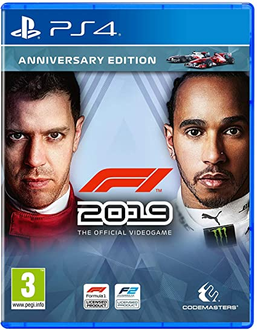

AVAILABLE ON PS4
Assetto Corsa (Italian for "Race Setup") is a sim racing video game developed by the Italian video game developer Kunos Simulazioni. It is designed with an emphasis on a realistic racing experience with support for extensive customization and moddability. The game was first released through the Steam Early Access program on 8 November 2013,[1] and officially left Early Access as final release version on 19 December 2014.[2] Publisher 505 Games in partnership with Kunos Simulazioni announced on 3 June 2015 that they would bring the game to Xbox One and PlayStation 4 in 2016[3] and on 20 January 2016 revealed a release date of 22 April 2016.[4] On 24 February 2016 it was announced that the console release was delayed to 3 June 2016.[5] 505 Games and Kunos Simulazioni announced another delay and a new release date for the console versions on 6 May 2016, the game was released on consoles on 26 and 30 August 2016 in Europe and North America respectively.[6][7] A sequel, Assetto Corsa Competizione was released in 29 May 2019.Assetto Corsa is a racing simulation that attempts to offer a realistic driving experience with a variety of road and race cars through detailed physics and tyre simulation on race tracks recreated through laser-scanning technology. It supports a range of peripherals like mouse, keyboard, wheels, gamepads, triple-displays, TrackIR head tracking and VR head-mounted displays as well as Nvidia 3D Vision and professional motion systems. The software can be extended through modded third-party content. The game allows to adjust realism settings fitting the experience of the player, ranging from artificial to "factory" or entirely disabled assists. A variety of session modes and session settings are available for offline and online play. Offline campaign, special events, custom championships, hotlap, quick race, drift, drag and race weekend sessions can be played alone or against AI. A server manager tool allows to create servers for online sessions, LAN sessions are also supported. When joining an offline/online session players can adjust their car through a setup interface. Depending on the car this includes gear ratios, tyre compounds, tyre pressures, fuel, suspension settings like anti-roll bars, wheel rates, ride height, packer rates, travel range, damper settings like bump stops and rebounds, heave dampers, alignment setting, drivetrain settings for differential lock and preload, hybrid settings, adjustments to the wings, brake bias, brake power, engine limiter, etc. Assists like traction control and ABS, turbo boost, KERS, ERS and engine brake settings and brake bias can be adjusted on the fly through hot-keys. The in-game HUD consists of multiple "virtual desktops" that allow to manually place a wide variety of "apps" anywhere on screen, and the selection can be expanded through custom apps written in the Python language. The API allows access to the session and simulation data through external LCDs or phone apps and the simulation exports telemetry data in a compatible format for professional data analysis software.

download